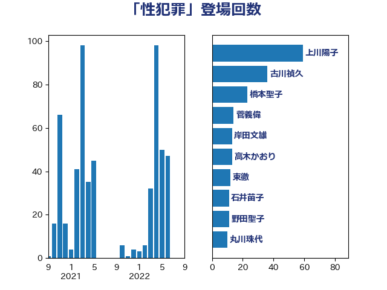

単語「性犯罪」

| 上川陽子 | 自由民主党 | 59 回 |
| 古川禎久 | 自由民主党 | 36 回 |
| 橋本聖子 | 無所属 | 23 回 |
| 菅義偉 | 自由民主党 | 14 回 |
| 岸田文雄 | 自由民主党 | 13 回 |
| 高木かおり | 日本維新の会 | 13 回 |
| 東徹 | 日本維新の会 | 12 回 |
| 石井苗子 | 日本維新の会 | 11 回 |
| 野田聖子 | 自由民主党 | 11 回 |
| 丸川珠代 | 自由民主党 | 10 回 |
| 今井絵理子 | 自由民主党 | 10 回 |
| 安江伸夫 | 公明党 | 10 回 |
| 寺田学 | 立憲民主党 | 10 回 |
| 山井和則 | 立憲民主党 | 9 回 |
| 梅村みずほ | 日本維新の会 | 7 回 |
| 串田誠一 | 日本維新の会 | 6 回 |
| 佐々木さやか | 公明党 | 6 回 |
| 吉川赳 | 無所属 | 6 回 |
| 塩村あやか | 立憲民主党 | 6 回 |
| 山田賢司 | 自由民主党 | 6 回 |
| 森まさこ | 自由民主党 | 6 回 |
| 倉林明子 | 日本共産党 | 5 回 |
| 古屋範子 | 公明党 | 5 回 |
| 吉田とも代 | 日本維新の会 | 5 回 |
| 杉田水脈 | 自由民主党 | 5 回 |
| 清水貴之 | 日本維新の会 | 5 回 |
| 萩生田光一 | 自由民主党 | 5 回 |
| 豊田俊郎 | 自由民主党 | 5 回 |
| 三ッ林裕巳 | 自由民主党 | 4 回 |
| 伊藤孝恵 | 国民民主党 | 4 回 |
| 吉良よし子 | 日本共産党 | 4 回 |
| 堤かなめ | 立憲民主党 | 4 回 |
| 後藤茂之 | 自由民主党 | 4 回 |
| 本村伸子 | 日本共産党 | 4 回 |
| 田村智子 | 日本共産党 | 4 回 |
| 稲田朋美 | 自由民主党 | 4 回 |
| 鰐淵洋子 | 公明党 | 4 回 |
| 宮崎政久 | 自由民主党 | 3 回 |
| 林芳正 | 自由民主党 | 3 回 |
| 仁木博文 | 無所属 | 2 回 |
| 大岡敏孝 | 自由民主党 | 2 回 |
| 小池晃 | 日本共産党 | 2 回 |
| 山添拓 | 日本共産党 | 2 回 |
| 山田勝彦 | 立憲民主党 | 2 回 |
| 末松信介 | 自由民主党 | 2 回 |
| 松野博一 | 自由民主党 | 2 回 |
| 柚木道義 | 立憲民主党 | 2 回 |
| 柴田巧 | 日本維新の会 | 2 回 |
| 横沢高徳 | 立憲民主党 | 2 回 |
| 清水真人 | 自由民主党 | 2 回 |
| 田所嘉徳 | 自由民主党 | 2 回 |
| 自見はなこ | 自由民主党 | 2 回 |
| 西岡秀子 | 国民民主党 | 2 回 |
| 長友慎治 | 国民民主党 | 2 回 |
| 伊波洋一 | 無所属 | 1 回 |
| 和田政宗 | 自由民主党 | 1 回 |
| 城井崇 | 立憲民主党 | 1 回 |
| 大口善徳 | 公明党 | 1 回 |
| 宮路拓馬 | 自由民主党 | 1 回 |
| 小西洋之 | 立憲民主党 | 1 回 |
| 山岸一生 | 立憲民主党 | 1 回 |
| 斎藤嘉隆 | 立憲民主党 | 1 回 |
| 有村治子 | 自由民主党 | 1 回 |
| 松島みどり | 自由民主党 | 1 回 |
| 森山浩行 | 立憲民主党 | 1 回 |
| 武井俊輔 | 自由民主党 | 1 回 |
| 池田佳隆 | 自由民主党 | 1 回 |
| 泉健太 | 立憲民主党 | 1 回 |
| 浅川義治 | 日本維新の会 | 1 回 |
| 牧島かれん | 自由民主党 | 1 回 |
| 玉木雄一郎 | 国民民主党 | 1 回 |
| 福山哲郎 | 立憲民主党 | 1 回 |
| 福重隆浩 | 公明党 | 1 回 |
| 紙智子 | 日本共産党 | 1 回 |
| 藤井比早之 | 自由民主党 | 1 回 |
| 谷田川元 | 立憲民主党 | 1 回 |
| 赤澤亮正 | 自由民主党 | 1 回 |
| 足立康史 | 日本維新の会 | 1 回 |
| 遠藤敬 | 日本維新の会 | 1 回 |
| 鈴木義弘 | 国民民主党 | 1 回 |
| 鈴木英敬 | 自由民主党 | 1 回 |
| 鈴木馨祐 | 自由民主党 | 1 回 |